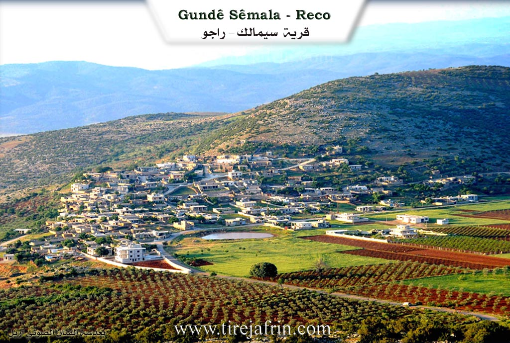
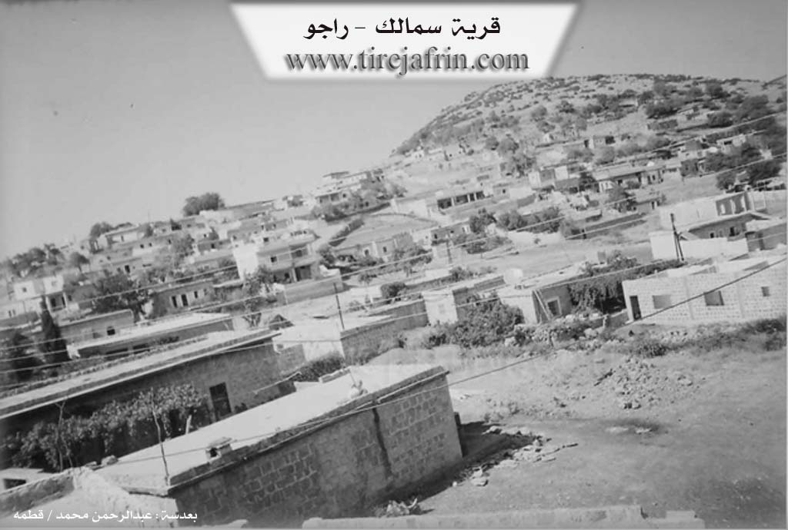

General Information
Nahiya (Subdistrict)
Reco
Also Known As
Al-Samal, Samalak, Simalik, Sêmala, Xirabî Simaq, خراب سماق, سيمولو
Families, Clans, etc.
Aze, Ecîka, Mala Cafê, Mala Ebdî Sîn, Mala Ehmedê Hêşter, Mala Elgudik, Mala Hemî Xiş, Mala Hêre, Mala Qadir Siyo, Mala Simê Qamber, Mala Xelîl Mezin, Çomû, Şêx Kêlê, Şêxûyî Tiko

Photos


Basic Information about Sêmala
Source: Ax û Welat
Etymology: Sêmala comes from Sê Mal (Three Houses) referring to the three original founding families; Meydana comes from Meydan (Square/Field) referring to the flat plain area
Foundation Date/Period: Approximately 700 years ago
Caves: Şikefta Gawir, Bekûdê
Number of Caves: 10
Springs: Qestel
Hills: Çiyayê Reş, Benasor, Benabehîvê, Poze Beşiq, Çiyayê Kurê, Çiyayê Behîvê
Shrines: Ziyareta Şêx Mihemed, Şehîd Yûsif
Trees: Dara tewlêkê
Wells: Tîjbertin
Other Landmarks: Gula Sêmala, Ava Reş, Bendavaraşê, Geliyê Odanê, Geliyê Kurma, Geliyê Yaşîl, Geliyê Hişarge, Geliyê Xendeka, Geliyê Oba, Çetelabanê, Deşta Wêranşarê
Source: Afrin 366
Etymology: Derived from Sê Mal meaning Three Houses
Ruins: Çûxtê Wêranê
Wells: Bîra gîjî, Cîwê
Other Landmarks: Gemrûkê, Şurbe, Meydankê, Bendava Meydankê, Gabnêr, Emara Şêxûyî Tiko
Summaries
I. Summary from TirejAfrin Site (English) of Sêmala
Source: https://www.tirejafrin.com/site/kura%20afrin%20%20%20Reco%20-%20samalek.htm
It is stated in the book جبل الكرد (عفرين) دراسة جغرافية Çiyayê Kurmênc (Efrîn): A Geographical Study: Sêmalik El-Semal 949 inhabitants / 550 meters altitude / 11km / 520m.
Sêmalik: This name means three houses (sê + mal) because the village consisted of three houses at its inception. The Arabized name El-Sehal means nothing. It is a medium sized village located on the southern slope of Çiyayê Hawar.
It is stated in the book عفرين .... نهرها وروابيها الخضراء Efrîn... Her River and Her Green Hills: Sêmalik is a village in Çiyayê Kurmênc following the Raco district, Efrîn region, Heleb governorate. It is a large village located in the northwestern part of Çiyayê Kurmênc (currently Heleb), on the southwestern slope of a limestone height called Çiyayê Qerebêl. It overlooks the Meydanlî plain to the southeast. It is 12 km away from Raco towards the north. Its soil is clay.
It is bordered to the north by a mountain range, several rugged streams, the Meydan Ekbez plains, and the Turkish border directly. It is bordered to the south by a fertile plain and a high mountain range called Çiyayê Qerebêl, the village of Ceylanlî, and the village of Çeqmeqa Mezin. To the east, at a distance of 1 km, is the village of Şêx Mihemedlî. To the west are a slope, a deep stream, a mountain range planted with oak and sindian trees, and the village of Edemanlî.
The number of its houses is approximately 85 houses and its age is approximately 300 years. Its old buildings are stone while the modern ones are concrete, extending towards the south in the direction of the Meydanlî plain. An electricity network is available, as well as drinking water from a well belonging to the state, a primary school, and a mosque. It connects to the district center via a winding paved road that is 18 km long, the Riya Sêmalik-Raco (Sêmalik-Raco road).
The residents work in rain fed agriculture (olives, figs, vines, grains, legumes) on an area of 244 hectares, as well as raising sheep and goats and making bastiq from grape extract. It belongs to the Şêx Mihemedlî municipality.
Sources of Information:
- Book: جبل الكرد (عفرين) دراسة جغرافية Çiyayê Kurmênc (Efrîn): A Geographical Study by د. محمد عبدو علي Dr. Mihemed Ebdo Elî.
- Book: عفرين .... نهرها وروابيها الخضراء Efrîn... Her River and Her Green Hills by عبدالرحمن محمد Ebdulrehman Mihemed from the village of Qetme.
- Studies of Navenda Tirej Soft / Ebdulrehman Hacî Osman.
- Some residents of the villages.
Preparation and execution: Manager of the Tirej Efrîn website, Ebdulrehman Hacî Osman, 20/12/2013.
II. Summary of Sêmala from Ax û Welat
Source: https://www.youtube.com/watch?v=8E6deb4fRwM
The village of Sêmala is one of seven villages comprising the Meydana cluster in the Çiyayê Kurmênc region of Efrîn. According to village elders like Bekir, the settlement was established approximately 700 years ago. Its name, Sêmala, translates to Three Houses, referencing the three original families who founded the community. Initially located higher up on a ridge, the village eventually moved to its current location. The broader name for the area, Meydana, refers to the flat plain or field where these villages are situated.
The social structure of Sêmala is defined by a diverse collection of families who migrated from surrounding villages. The three founding lineages were soon joined by others, creating a mixed community. Notable families include Mala Ebdî Sîn from Qûca, Mala Elgudik from Çaqmaqo, and Mala Ehmedê Hêşter from Hûlîlê. Other prominent lineages include Mala Cafê from Dûdê, Mala Xelîl Mezin from Qornê, Ecîka from Tatkê, Mala Qadir Siyo from Olkê, Mala Hemî Xiş from Xelîlka, Mala Simê Qamber from Gewenda, and Mala Hêre from Mêşkê. Residents historically wore the Kumê Sipî (white hat), which elders note originated from the direction of Laleş.
Geographically, the village sits near the Çiyayê Reş mountain and overlooks the Ava Reş river. The landscape is marked by deep valleys such as Geliyê Odanê, Geliyê Kurma, and Geliyê Hişarge. A central feature of the village is the Gula Sêmala, a rainwater pond. Local legend, recounted by Şêx Muslim, claims a sealed well named Tîjbertin lies beneath this pond. While natural springs are scarce in the immediate vicinity, with only a distant Qestel providing water in the past, the area contains ten caves collectively known as Bekûdê and the singular Şikefta Gawir.
Religious and sacred sites play a significant role in the landscape. The Ziyareta Şêx Mihemed is located in Geliyê Hişarge. Additionally, a tree near the central pond has become a shrine known as Şehîd Yûsif, where locals seek blessings. Historically, the village was known for cultivating sumac, though olive groves and grain farming later became dominant. The village is also recognized for specific regional dishes such as Qabûlme and Ofsîr. Culturally, Sêmala has a strong tradition of music and arts, boasting several singers and musicians including Adnan Dilbrîn, Mislimê Alo, and Îbrahîm Xelîl, as well as a skilled stove repairman named Ebdilrehman who maintains traditional tools.
II. Summary of Sêmala from Afrin 366
Source: https://www.youtube.com/watch?v=xqqX49HB7pA
The documentary focuses on the village of Semolka (also referred to as Semolk or Sêmalka), located in the Mabatlî district of the Afrin region. The village is situated in a landscape defined by olive groves and rainy autumn weather. It lies in close proximity to the villages of Gemrûkê and Şurbe (also called Şorba), and overlooks the Meydankê area, offering views of the Bendava Meydankê (Meydankê Dam).
The village head (Muxtar), named Miqdad, explains the origin of the village's name. According to oral history passed down by elders, the settlement began with only three households (sê mal). Over time, the name evolved from "Sê Mal" to Semolk or Semolka as the village expanded. Today, the village comprises approximately 135 to 140 households. Miqdad notes that while the village administratively falls under Mabatlî, the surrounding terrain varies; the land towards Şurbe and Gemrûkê resembles the nature of Şerwan, while other parts resemble Bilbilê.
Regarding the social structure, the residents identify specific families that have defined the village's history. The oldest family mentioned is Çomû (Molo Çomû), who are described as the original inhabitants. Following them, other families such as Aze and Şêx Kêlê became established residents. Another prominent family name mentioned in connection with a large building or estate is Şêxûyî Tiko. The economy is driven almost exclusively by agriculture, specifically the cultivation of olives (zeytûn) and the production of olive oil. The village contains multiple olive presses (mekbez), and the transcript highlights the local labor force engaged in construction (yapiyê) and olive processing, with some residents discussing relatives living in the diaspora, particularly in Germany.
Notable landmarks in and around the village include Emara Şêxûyî Tiko, a multi-story building situated opposite the filming location. The villagers also utilize specific water sources, including Bîra gîjî and a well at Cîwê. A site known as Gabnêr (or Hewşa Gabnêr) is identified as a former mine (maden) that has been converted into a scenic picnic area. While the area is rocky and contains caves, including a large cave mentioned in the lower parts of the terrain, no specific names are provided for the caves themselves. Nearby historical or ruined features include a site referred to as Çûxtê Wêranê.
II. Ax û Walat Book 1
VILLAGE OF SÊMALA
2/8/2016
The village of Sêmala is affiliated with the Reco district of the Efrîn canton, located 15 km north of the city of Reco and 50 km north of the city of Efrîn.
The village of Sêmala is one of the Meydana villages, which consists of 7 villages.
To the south of the village are Mount Reş, Benê Sor, Mount Behîvê, and Pozê Bêşik. To the west are the Odanê valley, the Kurma valley, the Yaşil valley, which means ((green)), and the Heşargê valley, where the shrine of Şêx Mihemed is located, and Ten Caves known by the name of Beko, and the Ava Reş (Black Water) which flows from northern Kurdistan and collects in the Beraşê dam.
To the north of the village is Mount Kûrê, and after it are the Xendeka valley, the Obe valley, Çetela Benê, the Wêranşerê plain, and the villages of Gazê, Kosa, Penêreka, and Demhat.
The border of northern Kurdistan is 6 km north of the village. A body of water near the border flows into the Ava Reş. To the east of the village are 5 of the Meydana villages: Kurê, Welîlkê, Dudê, Gewanda, Uskûtê, and Mount Behîvê. In the Xewrekê Plain, when it rains in winter, water flows there and goes underground.
Previously, the village of Sêmala got its drinking water from cisterns located to the north of the village. But now their water has decreased.
There are about 150 houses in the village, and nearly 1500 people live there.
There are 24 martyrs from the village of Sêmala who have given their lives at various times for the freedom of the Kurdish people.
The village commune is named Şehîd Sefqan, and the women's commune is named Ş. Adar.
There are 5 artists or singers from the village of Sêmala, but they have passed on to God's mercy, among them:
Şêxmûs Hesen, Îbrahîm Xelîl, Mislim Elo, Horîk Icik, Hesê Qeyner.
There were 3 sheikhs from the village who conducted religious work and lessons, they were: Mistefa, Mislim, Keçbirîm.
The village of Sêmala makes its living from agriculture, and primarily from olive groves, along with barley, wheat, and vegetable gardens by the Ava Reş in the Wêranşerê plain.
Some people own livestock such as sheep and goats, and several people work as artisans in various professions in Reco. Also, some men and women work in the institutions and bodies of the Autonomous Administration in Reco and Efrîn.
The village school is named Şehîd Berbang. There is an old mosque in the village where the villagers go for prayer.
There is a pond in the village known as the pond of Sêmala. There are 2 trees in the village: the Tewlîkê tree, around which there was a shrine known as Ş. Yûsif, which the people of the village consider a sacred place.
The Ava Reş; in the past, people would take ((KÎL)) [blue clay] from it from the blue soil and wash their hair with it instead of soap.
Transcriptions and Subtitles
| Source | Video | Subtitles | Transcript |
|---|---|---|---|
| Ax û Welat 1 | Watch Video | Download SRT | View Transcript |
| Afrin 366 1 | Watch Video | Download SRT | View Transcript |
Foundation/Origin Information of Sêmala
The village in the beginning of its formation consisted of three houses.
Source: TirejAfrin Site
Possible Village Name Meaning of Sêmala
Simalik: meaning "three houses".
Source: TirejAfrin Site
V. Links
- Tirej Afrin:
https://www.tirejafrin.com/site/kura%20afrin%20%20%20Reco%20-%20samalek.htm - Ax û Welat:
https://www.youtube.com/watch?v=8E6deb4fRwM - Video:
https://www.youtube.com/watch?v=hqrmGCFn-ME - Link:
https://www.youtube.com/watch?v=DiZNBTOYYc0 - Link:
https://www.youtube.com/watch?v=ruolD49KgRY - Link:
https://www.youtube.com/watch?v=Vr2IMPddaUg - Link:
https://www.youtube.com/watch?v=0In2dGVxa2A - Link:
https://www.youtube.com/watch?v=7c_WWRki1B4 - Link:
https://www.youtube.com/watch?v=US4ylR6Kr5A - Link:
https://www.youtube.com/watch?v=ynYB1hAnkuI - Afrin 366:
https://www.youtube.com/watch?v=xqqX49HB7pA